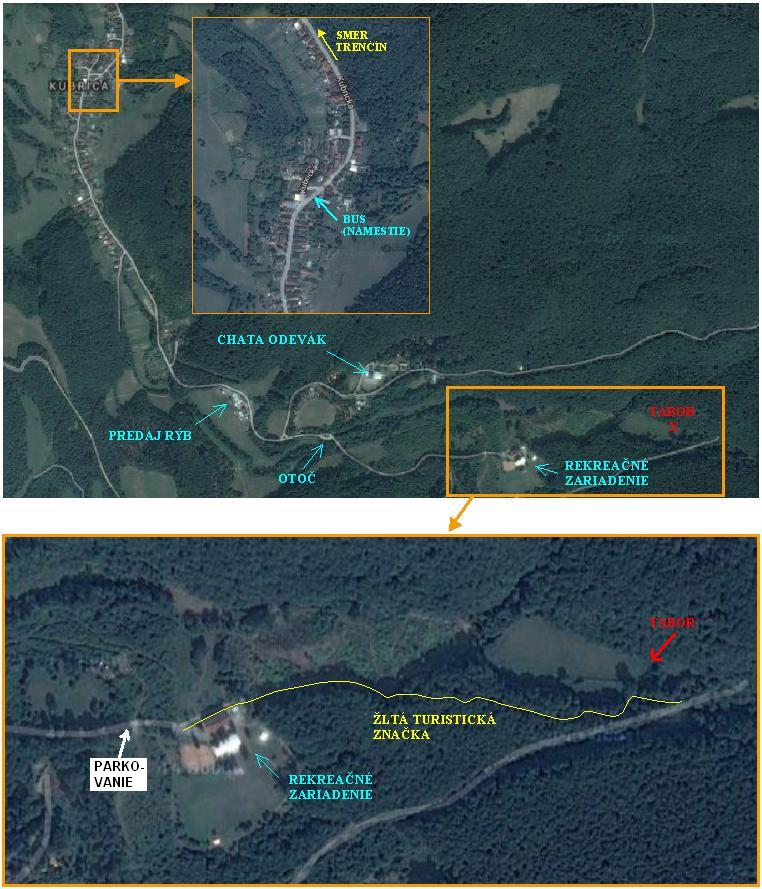

Úvod
Akon - Vojnou zmietaná zem
(2.7.2014 15:00 - 6.7.2014 10:00)
Jedná sa o 4-dnový LARP na štýl svetu v ktorom sa budú nachádzať rôzne kulisky, beštie a statočný dobrodruhovia. V minulosti bol Akon len pevnostou uprostred divočiny plnej barbarov ale po dlhých bojoch zavládol mier a kráľ pre jeho rozvoj začal zvolávať z okolia remeselníkov, dobrodruhov ale aj prostý ľud aby sa stal Akon veľavážením mestom. Avšak v nedávnej minulosti pevnost Akon napadli hordy nemŕtvych bojovníkov, ktoré boli vďaka udatným hrdinom zničený a ich skutky sa navždy vpísali do histórie Akonu.
Vpravidlách si máte možnosť vybrať z veľkého počtu postáv za ktoré môžete hrať, ak by ste však napriek tomu chceli hrať nejakú špeciálnu postavu (CP, creep, CPhráč), najmä tý skusenejší hráči, tak sa mi skúste ozvať a po mojom uvážení si niektorých z vás vyberiem na tieto špeciálne postavy.
Registračný poplatok je 5 euro do 30.4.2014 a 7 euro do 15.6.2014 a vyberá sa na mieste. Po tomto termíne sa už nebude možné registrovať. Navyše, všetky špeciálne postavy sa musia registrovať najneskôr do 31.5.2014.
Ak si budete chcieť registrovať postavu z minulých ročníkov, tak tie sa budúriešiť s každým osobitne.


Lokácia
Akon 5 sa uskutoční neďaleko Trenčína za obcou Kubrica. Najlepšie ako sa na miesto dostat je príst vlakom alebo autobusom do Trenčína na stanicu a odtial prestúpiť na MHD-linky 7,11,13 ktoré vás dovezú na poslednú zastavku Kubrica námestie. Odtial je to ešte 2.5 km šlapania smerom ku chate Kubrica. Asi 60 metrov pred touto chatou po pravej strane sa da parkovat, takže tý čo prídete autami tak ich prosim odparkujte tu. Odtialto je to už na lokačku len nejakých 500 metrov.
Dej
Už je tomu niekoľko rokov čo mierumilovné kráľovstvo Tahou napadli vojská dvoch kráľovstiev. Na severovýchodnom pobreží sa vylodili Sakonské vojská a z juhovýchodu vtrhli do krajiny vojská Holmgardu. Vojna už trvá dlhé 4 roky a za ten čas si vybrala vysokú daň. Celé kráľovstvo je vo veľkom zmätku a boje prebiehajú vo všetkých jeho provinciách. Azda najviac si to odniesla najmladšia provincia Akon, kvôli jej veľkým nerastným bohatstvám, neprebádaným lesom a jaskyniam plných najrozličnejších artefaktov, magických vecí, zázračných bylín a drahých pokladov. Našťastie však túto provinciu bráni mohutná pevnosť s rovnomenným názvom, „Akon“, ktorá je plná udatných vojakov, rytierov, bojovníkov, mágov, klerikov, ale aj prostých ľudí ktorý sú odhodlaný ju brániť za každú cenu, hoc by to aj bola cena najvyššia a to za vlastný život. V posledných dňoch sa našťastie podarilo vytlačiť cudzie vojská z bezprostrednej blízkosti pevnosti, no z času na čas sa ešte vyskytne prekvapivý útok vďaka ktorému musia byť obyvatelia Akonu neustále v pohotovosti, pripravený brániť svoje domovy. No ak vojna potrvá ešte nejaký čas, je dosť možne aj Akon nakoniec podľahne. Vďaka neustálim bojom sa počet jej obrancov zmenšil takmer o polovicu, a do pevnosti prestali prichádzať nový obyvatelia, remeselníci, obchodníci, dobrodruhovia,... . Polia sú znivočene, a zanedbané lebo ich nemá kto obrábať a keby aj mal kto, je to priveľmi nebezpečne a málo kto je ochotný opustiť bezpečie pevnosti. Čo sa týka baní, tie sú buď vyťažené alebo ich zasypali nepriateľské vojská. Takže poľnohospodárstvo, lov, baníctvo, rybolov, ťažba dreva, zber plodov a liečivých bylín, to všetko už dávno nik nevykonáva, a zásobovanie a obchod prestalo fungovať už dávno, pevnosť žije len zo svojich zásob ktoré sa rýchlo míňajú. Navyše všade okolo ležia stovky mŕtvol ktoré nemá kto pochovať a pach z ich rozkladajúcich sa tiel sa šíri vzduchom široko ďaleko, vďaka čomu sa začali v pevnosti vyskytovať rôzne choroby z ktorých najvážnejšiou je azda mor. Niektorý obyvatelia dokonca tvrdia, že videli znovu ožívať mŕtvoly, ale táto správa sa zatiaľ našťastie nepotvrdila... . No napriek tomu sa v poslednej dobe v okolí vyskytli všelijaké podivné úkazy. Ťažko povedať čomu ich pripisovať, môže to byť azda aj hnev bohov na obyvateľov Akonu za to, že sa vo svojich súženiach začali obracať na najrôznejších bôžikov či démonov, stavať im oltáre a modli, a pozývať ich prisluhovačov do pevnosti aby tu šírili ich vieru a obracali na ňu ľudí...
Správca Maximus, vzhľadom k tomu, že útoky na pevnosť zoslabli, dostal nariadenie od kráľa aby sa pripojil k severnej armáde na čele ktorej sa má pokúsiť vyhnať Sakonské vojská preč z kráľovstva.
Samotný kráľ Agnus Valeron sa postavil do čela južnej armády s cieľom zničiť Holmgardské vojská a nájsť svoju dávno stratenú dcéru, ktorú s najväčšou pravdepodobnosťou zajali a uniesli práve Holmgardský, krátko po ich vpáde do kráľovstva. Vládu nad kráľovstvom sa rozhodol prenechať svojmu najmladšiemu (po tom čo bal zabitý Deldegar aj jedinému) synovi Ulrikovi, ktorý chcel osobne veliť južnej armáde a dokázať tak otcovi, že je hodný volať ja sa jeho synom. Kráľ však z obáv že, by stratil aj svojho posledného potomka a dediča trónu, rozhodol že južnú armádu radšej povedie do boja sám. A tak sa kráľ Ulrik Valeron stáva právoplatným vládcom kráľovstva Tahou. Nedá sa povedať že by bol Ulrik zlým vladárom, ale zjavne rád rieši veci po svojom a tak krátko po jeho dosadený na trón, sa rozhodol zrušiť všetky nariadenia, vyhlásenia, ustanovenia, dohody a zmluvy ktoré jeho otec podpísal a prisľúbil. Samozrejme všetko čo robí je legitímne a v rámci jeho kompetencii a zdôvodňuje to tým, že všetko si musí osobne prečítať a potvrdiť vlastnoručným podpisom, čo mu zaberá až príliš veľa času, namiesto toho aby riešil aktuálne problémy sužovaného kráľovstva. Týmto jeho konaním si však nezískal príliš veľkú obľubu hlavne u kráľov okolitých zemí a u samotnej Tahouskej šľachty.
Vyzerá to tak, že obyvatelia pevnosti Akon ostali na svoje problémy sami, a teraz je len na nich ako sa s nimi dokážu vysporiadať.